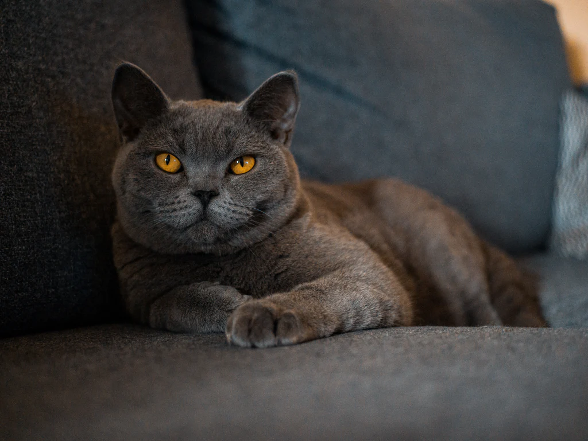
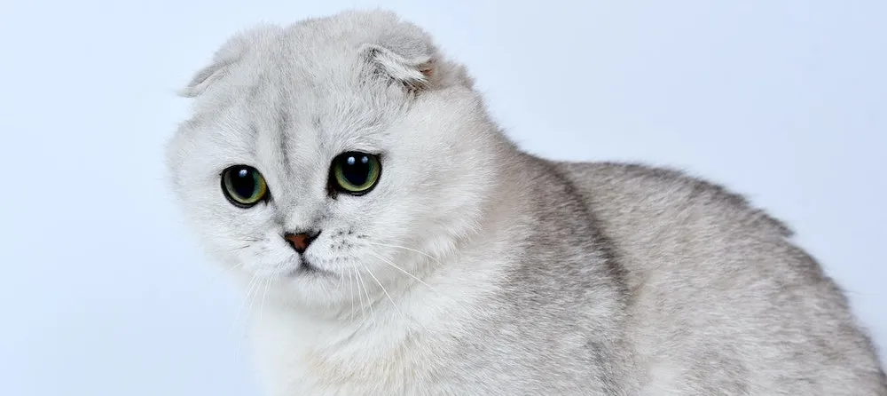
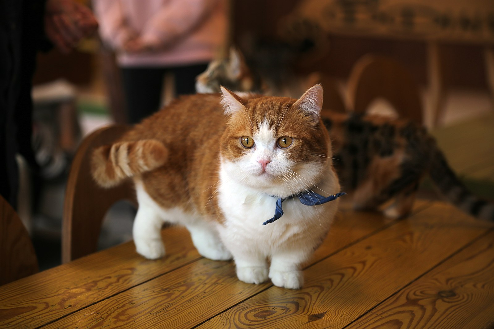
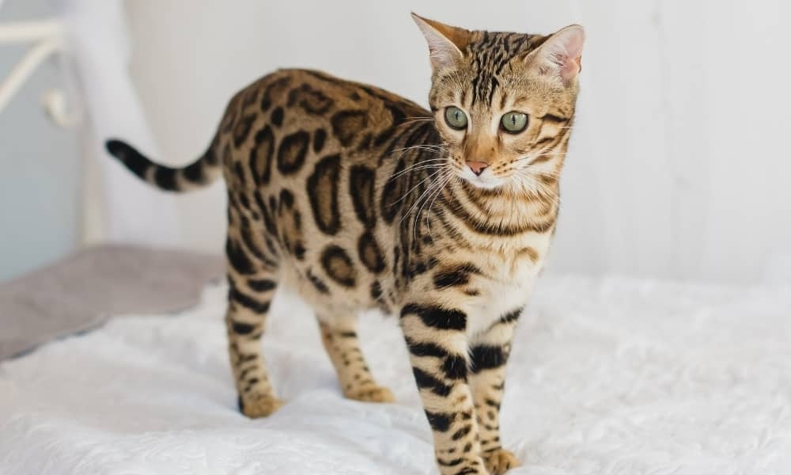
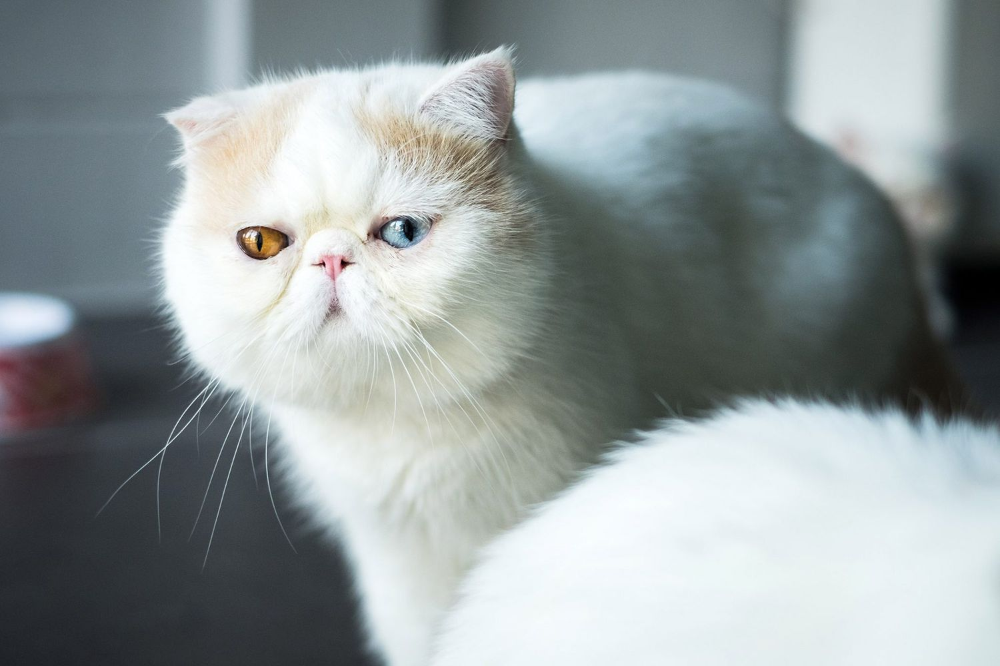
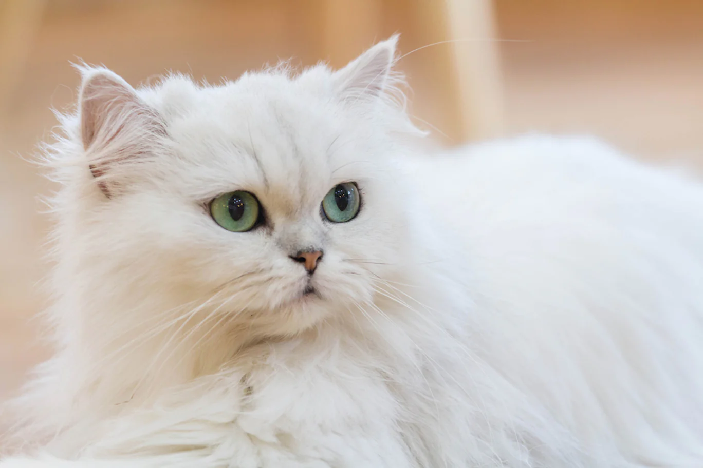
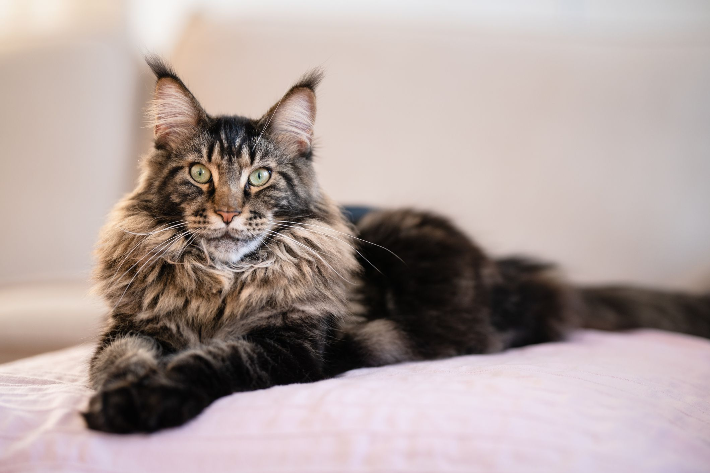
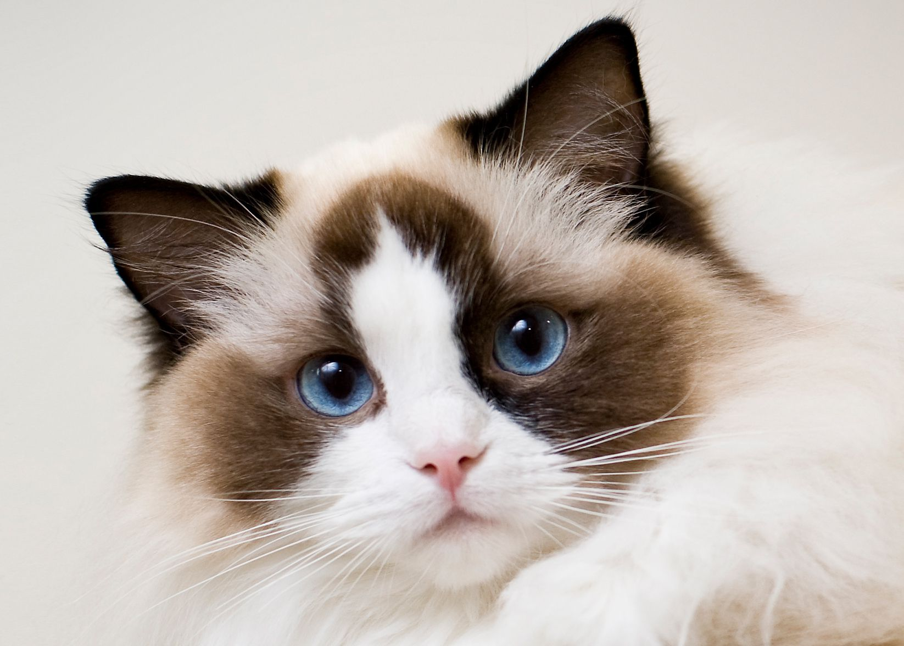

โรคประจำสายพันธุ์ของแมว
อเมริกัน ช็อตแฮร์ (American Short Hair)

- โรคระบบหมุนเวียนโลหิตและหัวใจ
- โรคกล้ามเนื้อหัวใจหนาผิดปกติ (Hypertrophic cardiomyopathy : HCM)
- โรคกล้ามเนื้อหัวใจเสื่อม (Dilated cardiomyopathy : DCM) - โรคระบบทางเดินปัสสาวะและไต
- กลุ่มโรคไตรั่ว (Hereditary nephritis)
- โรคทางเดินปัสสาวะส่วนล่างของแมว (Feline Lower Urinary Tract Disease : FLUTD)
- ไตวายแบบเรื้อรัง (Chronic renal failure)
- ภาวะเกิดถุงน้ำภายในไต (Polycystic kidney disease : PKD) - โรคระบบต่อมไร้ท่อ
- ไทรอยด์เป็นพิษ (Hyperthyroidism)
- โรคเบาหวาน (Diabetes Mellitus : DM) - โรคหู
- โรคหูหนวกตั้งแต่กำเนิด (Congenital deafness)
บริติช ช็อตแฮร์ (British Shorthair)

- โรคระบบหมุนเวียนโลหิตและหัวใจ
- โรคกล้ามเนื้อหัวใจหนาผิดปกติ (Hypertrophic cardiomyopathy : HCM)
- โรคฮีโมฟีเลีย (Hemophilia)
สก็อตติช โฟลด์ (Scottish Fold)

- โรคผิวหนัง
- การติดเชื้อที่หู (Ear Infection)
- โรคระบบประสาท
- โรควิตกกังวลต่อการแยกจาก หรือเกิดจากบาดแผลทางใจ (Separation Anxiety Disorder)
- โรคระบบหมุนเวียนโลหิตและหัวใจ
- โรคกล้ามเนื้อหัวใจหนาผิดปกติ (Hypertrophic Cardiomyopathy : HCM)
- โรคกล้ามเนื้อหัวใจเสื่อม (Dilated Cardiomyopathy : DCM) - โรคระบบโครงกระดูก ข้อต่อ และโครงสร้าง
- โรคทางพันธุกรรมเดี่ยวกับการเจริญผิดปกติของกระดูก (Osteochondrodysplasic)
- โรคระบบทางเดินอาหารและตับ
- ภาวะหลอดเลือดดำที่ตับลัดเข้าสู่ระบบหมุนเวียนเลือด (Portosystemic Shunts : PSS)
- โรคระบบทางเดินปัสสาวะและไต
- โรคทางเดินปัสสาวะส่วนล่างของแมว (Feline Lower Urinary Tract Disease : FLUTD)
มันช์กิ้น (Munchkin)

- โรคระบบประสาท
- โรควิตกกังวลต่อการแยกจาก หรือเกิดจากบาดแผลทางใจ (Separation Anxiety Disorder)
- โรคระบบหมุนเวียนโลหิตและหัวใจ
- โรคกล้ามเนื้อหัวใจหนาผิดปกติ (Hypertrophic Cardiomyopathy : HCM)
- โรคระบบโครงกระดูก ข้อต่อ และโครงสร้าง
- โรคข้อเสื่อม (Osteoarthritis)
- โรคระบบทางเดินหายใจ
- โรคระบบทางเดินหายใจผิดปกติของสุนัขและแมวพันธุ์หน้าสั้น (Brachycephalic Syndrome)
- โรคระบบทางเดินอาหาร
- ปัญหาสุขภาพช่องปาก
- โรคระบบทางเดินปัสสาวะและไต
- ภาวะเกิดถุงน้ำภายในไต (Polycystic Kidney Disease : PKD)
- โรคตา
- โรคต้อกระจก (Cataract)
- โรคเปลือกตาม้วนออก (Ectropion Eyelids)
- คราบน้ำตา (Tear Staining) จากการที่ร่างกายผลิตน้ำตามากเกินไป
เบงกอล (Bengal)

- โรคระบบประสาท
ความเสื่อมของเส้นประสาทส่วนปลาย (Distal neuropathy)
- โรคระบบไหลเวียนโลหิตและหัวใจ
ภาวะกล้ามเนื้อหัวใจขยายใหญ่ (Hypertrophic cardiomyopathy) ภาวะเม็ดเลือดแดงแตกจากการขาดเอนไซม์ไพรูเวท ไคเนส (Erythrocyte pyruvate kinase deficiency)
- โรคระบบกระดูกเอ็นและข้อต่อ
ภาวะกระดูกซี่โครงแบนผิดปกติในแมวเด็ก (Flat-chested kitten syndrome) ภาวะข้อสะโพกเสื่อม (Hip dysplasia) โรคสะบ้าเคลื่อน (Patellar luxation)
- โรคตา
ภาวะเสื่อมของจอประสาทตา (Progressive retinal atrophy)
อเมริกัน เคิร์ล (American Curl)

- โรค Progressive retina atrophy (PRA)
โรคจอประสาทตาเสื่อม มันเป็นโรคที่สามารถส่งต่อมาจากกรรมพันธุ์ได้ อาการที่สามารถสังเกตได้ คือการที่แมวมองไม่ค่อยเห็นในที่มืด และมักจะไปเดินชนสิ่งต่างๆ รอบตัว และถ้าเริ่มมีอาการที่รุนแรง แม้แต่ในที่ที่มีแสงสว่างมากเพียงพอ มันก็อาจจะมองไม่ค่อยเห็นได้
- หูอักเสบ (Ear infection)
เป็นปัญหาสุขภาพเกี่ยวกับหูที่สามารถพบเจอในแมว อาการที่สามารถสังเกตได้คือ หูแมวมีกลิ่นเหม็น ชอบสะบัดหัว แมวเกาหูบ่อยผิดปกติ และในใบหูมักจะมีขี้หูมากเกินไปหรือมีอาการบวมแดงมากผิดปกติ การสังเกตความผิดปกติของหูแมวเป็นประจำจึงเป็นสิ่งที่ควรทำ
เอ็กโซติก ช็อตแฮร์ (Exotic Shorthair)

- โรคระบบประสาท
- โรควิตกกังวลต่อการแยกจาก หรือเกิดจากบาดแผลทางใจ (Separation Anxiety Disorder)
- โรคระบบหมุนเวียนโลหิตและหัวใจ
- โรคกล้ามเนื้อหัวใจหนาผิดปกติ (Hypertrophic Cardiomyopathy : HCM)
- โรคกล้ามเนื้อหัวใจเสื่อม (Dilated Cardiomyopathy : DCM) - โรคระบบทางเดินอาหารและตับ
- ภาวะหลอดเลือดดำที่ตับลัดเข้าสู่ระบบหมุนเวียนเลือด (Portosystemic Shunts : PSS)
- โรคระบบทางเดินปัสสาวะและไต
- โรคทางเดินปัสสาวะส่วนล่างของแมว (Feline Lower Urinary Tract Disease : FLUTD)
- ภาวะเกิดถุงน้ำภายในไต (Polycystic Kidney Disease : PKD) - โรคระบบทางเดินหายใจ
- โรคระบบทางเดินหายใจผิดปกติของสุนัขและแมวพันธุ์หน้าสั้น (Brachycephalic Syndrome)
- โรคระบบโครงกระดูก ข้อต่อ และโครงสร้าง
- โรคข้อสะโพกเจริญผิดปกติ (Hip Dysplasia)
- โรคระบบเลือดและภูมิคุ้มกัน
- โรคเม็ดเลือดแดงแตกจากภูมิคุ้มกันที่ต่อต้านเม็ดเลือดแดงของลูกสัตว์ที่มีในนมน้ำเหลืองของแม่สัตว์
(Neonatal Isoerythrolysis :NI หรือ Hemolytic Icterus) - โรคตา
- ภาวะไม่มีเปลือกตาตั้งแต่กำเนิด (Eyelid Agenesis)
- โรคต้อกระจก (Cataract)
- โรคเชอร์รี่อาย (Cherry Eye)
- โรคเปลือกตาม้วนออก (Ectropion Eyelids)
- คราบน้ำตา (Tear Staining) จากการที่ร่างกายผลิตน้ำตามากเกินไป
เปอร์เซีย (Persian)

- โรคผิวหนัง
- การติดเชื้อที่หู (Ear Infection)
- การติดเชื้อราในแมว (Dermatophytosis) - โรคระบบประสาท
- โรควิตกกังวลต่อการแยกจาก หรือเกิดจากบาดแผลทางใจ (Separation Anxiety Disorder)
- โรคระบบหมุนเวียนโลหิตและหัวใจ
- โรคกล้ามเนื้อหัวใจหนาผิดปกติ (Hypertrophic Cardiomyopathy : HCM)
- โรคระบบโครงกระดูก ข้อต่อ และโครงสร้าง
- โรคข้อสะโพกเจริญผิดปกติ (Hip Dysplasia)
- โรคระบบทางเดินอาหารและตับ
- ภาวะก้อนขนอุดตัน (Hairball obstruction)
- ภาวะหลอดเลือดดำที่ตับลัดเข้าสู่ระบบหมุนเวียนเลือด (Portosystemic Shunts : PSS) - โรคระบบทางเดินปัสสาวะและไต
- โรคทางเดินปัสสาวะส่วนล่างของแมว (Feline Lower Urinary Tract Disease : FLUTD)
- ภาวะเกิดถุงน้ำภายในไต (Polycystic Kidney Disease : PKD) - โรคระบบทางเดินหายใจ
โรคระบบทางเดินหายใจผิดปกติของสุนัขและแมวพันธุ์หน้าสั้น (Brachycephalic Syndrome)
- โรคตา
- ภาวะไม่มีเปลือกตาตั้งแต่กำเนิด (Eyelid Agenesis)
- โรคต้อกระจก (Cataract)
- โรคเชอร์รี่อาย (Cherry Eye)
- โรคเปลือกตาม้วนออก (Ectropion Eyelids)
- คราบน้ำตา (Tear Staining) จากการที่ร่างกายผลิตน้ำตามากเกินไป
เมนคูน (Maine Coon)

- โรคระบบหมุนเวียนโลหิต และหัวใจ
- โรคกล้ามเนื้อหัวใจหนาผิดปกติ (Hypertrophic Cardiomyopathy : HCM)
- โรคระบบโครงกระดูก ข้อต่อ และโครงสร้าง
- โรคข้อสะโพกเจริญผิดปกติ (Hip Dysplasia)
-โรคกล้ามเนื้ออ่อนแรงจากไขสันหลังเสื่อม (Spinal Muscular Atrophy : SMA) - โรคระบบทางเดินอาหาร
- ปัญหาสุขภาพช่องปาก
- โรคระบบทางเดินปัสสาวะและไต
- ภาวะเกิดถุงน้ำภายในไต (Polycystic Kidney Disease : PKD)
แร็กดอลล์ (Ragdoll)

- โรคระบบหมุนเวียนโลหิต และหัวใจ
- โรคกล้ามเนื้อหัวใจหนาตัวผิดปกติ (hypertrophic cardiomyopathy)